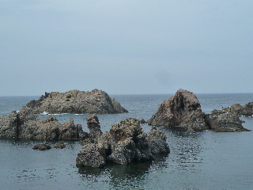
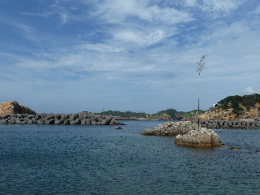
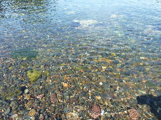

おわし浜海水浴場は波が穏やかでした。
2013/07/14
日御碕灯台近くの駐車場から、歩いておわし浜海水浴場に行きました。
看板によると徒歩5分です。（下り坂なのでもっと速いかも。）

途中にはこんな景色がありました。
いい景色です。

今日はグラスボートが欠航するくらい風が強かったですが、ここはぐるっと囲まれているので、波が穏やかでした。
今日はシーカヤックをしている人が沢山いらっしゃいました。
ボートがスイスイ進んでて楽しそうでした。
ちょっとやってみたいです。

丸い砂利の浜なので、砂が舞わなくて透明度が高いですね。
泳ぐのにも良さそうです。